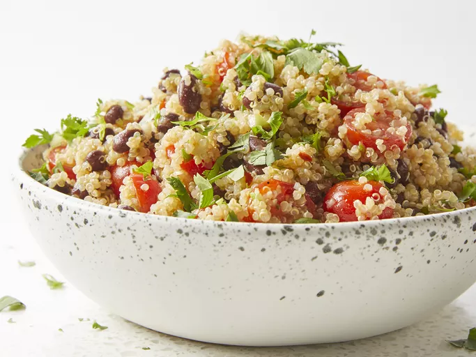

Easy Quinoa Salad

Description
This quinoa salad light and citrusy, easy to make for a great summer meal, and a great new way to enjoy quinoa. Lime juice and cilantro give a refreshing kick, while quinoa and black beans make it hearty and filling.
Ingredients
- Quinoa and water: Cook one cup of quinoa in two cups of water
- Oil: The dressing starts with extra-virgin olive oil.
- Limes: The juice of two limes adds brightness to the salad.
- Seasonings: Season the quinoa salad with ground cumin, salt, red pepper flakes, fresh cilantro, and black pepper.
- Cherry tomatoes and green onions: Halved cherry tomatoes and chopped green onions give the quinoa salad pops of color.
- Black beans: You’ll need a drained can of black beans for this protein-packed quinoa salad.
Steps
- Cook the quinoa.
- Make the dressing.
- Combine the quinoa with the tomatoes, black beans, and green onions.
- Toss the salad with the dressing, then stir in the remaining ingredients.